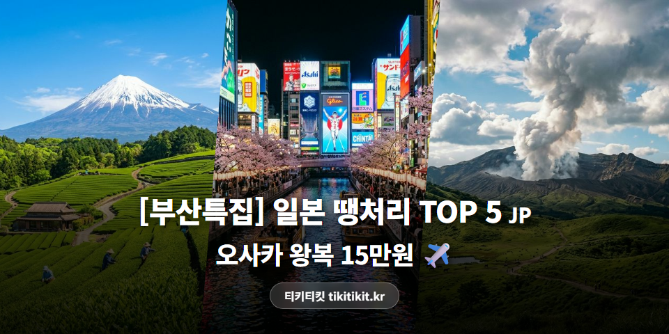
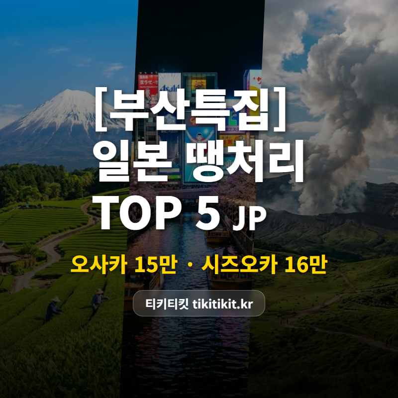
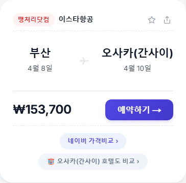
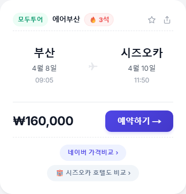
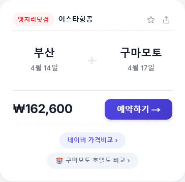
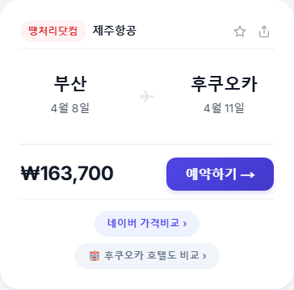
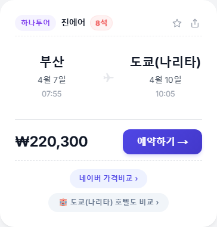
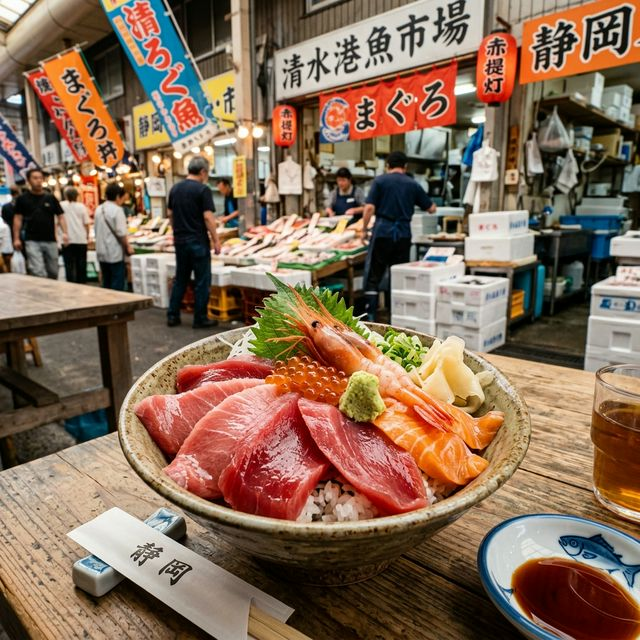
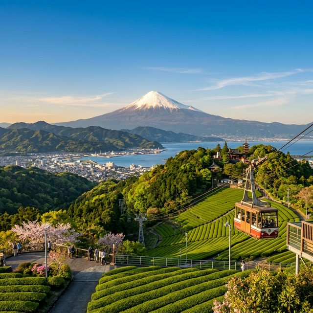
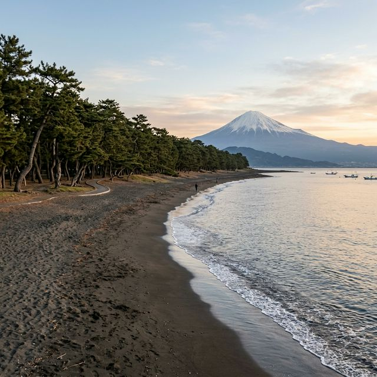

[부산특집] 김해공항 출발 일본 땡처리 TOP 5 | 오사카 15만원, 시즈오카 16만원 ✈️

김해공항에서 일본 왕복
15만원이면 진짜인가 싶죠? 😳
어디가 있는지 바로 볼게요 👇
🏆 부산 출발 일본 땡처리 TOP 5
🥇 1위
부산 ↔ 오사카
이스타항공 · 4/8(수)~4/10(금) · 2박 3일
153,700원


오사카 왕복이 15만원대?
벚꽃 시즌 한가운데인 4월 둘째 주예요 🌸
이 시기에 이 가격이면 망설일 여유 없어요.
🥈 2위
부산 ↔ 시즈오카
에어부산 · 4/8(수)~4/10(금) · 2박 3일
160,000원


부산에서만 직항이 있는 숨은 노선.
4월 초면 후지산에 아직 눈이 남아있어요 🗻
녹차밭 사이로 보는 설산, 사진 찍기엔 이때가 최고.
🥉 3위
부산 ↔ 구마모토
이스타항공 · 4/14(화)~4/17(금) · 3박 4일
162,600원


아소산 화구를 눈앞에서 보는 경험.
렌터카 빌려서 야마나미 하이웨이 달리면
이게 16만원짜리 여행이라니 🏔️
4️⃣ 4위
부산 ↔ 후쿠오카
제주항공 · 4/8(수)~4/11(토) · 3박 4일
163,700원


부산 사람에겐 "동네 마실" 같은 도시 😄
이번엔 텐진 지하상가 말고
다자이후 산책이나 이토시마 카페 한번 어때요?
5️⃣ 5위
부산 ↔ 도쿄
진에어 · 4/5(일)~4/8(수) · 3박 4일
220,300원


김해에서 나리타까지 직항.
인천 경유 없이 바로 도쿄 도심으로 🚃
4월이면 시모키타자와 빈티지샵 투어도 좋아요.
※ 유류할증료/텍스 포함 왕복 총액 기준
※ 좌석이 빠지면 가격이 바뀌거나 사라질 수 있어요.
💡 에디터 픽 : 1위 시즈오카
2박 3일 추천 동선
📍 Day 1 — 시즈오카역 도착 → 스루가만 해산물 거리
시즈오카 어시장에서 참치 덮밥은 필수 🍣

📍 Day 2 — 니혼다이라에서 후지산 전망
시즈오카 센겐 신사도 꼭 들러보세요. 도쿠가와가 세운 화려한 신사 ⛩️
오후엔 마루코짱 거리에서 복고 산책 🚶

📍 Day 3 — 미호노마쓰바라 해변
해변에서 바라보는 후지산이 유네스코 등재된 그 풍경.
공항까지 40분이라 여유롭게 마무리.

💡 시즈오카역에서 공항까지 리무진 버스 1,200엔(약 50분).
렌터카 없이도 충분히 돌 수 있어요.
📌 부산 출발 꿀팁
✨ 예약 전에 알아두면 좋은 것들
💰 땡처리 항공권은 오전에 새 좌석이 풀릴 때가 많아요. 아침에 한번 체크해보세요.
🏯 구마모토 ↔ 후쿠오카는 신칸센 30분. 두 도시 묶어서 여행하면 가성비 최고!
🧳 LCC는 수하물 별도인 경우가 많아요. 최종 결제 전에 수하물 포함 여부 꼭 확인하세요.
김해공항에서 일본 15만원.
이런 가격은 고민하면 없어져요.
마음에 드는 노선 있으면
지금 바로 확인해보세요 ✈️
✈️ 항공권 가격 비교 | 티키티킷 tikitikit.kr
#땡처리항공권 #부산출발항공권 #김해공항 #부산일본여행 #시즈오카여행 #오사카항공권 #구마모토여행 #후쿠오카여행 #도쿄항공권 #티키티킷